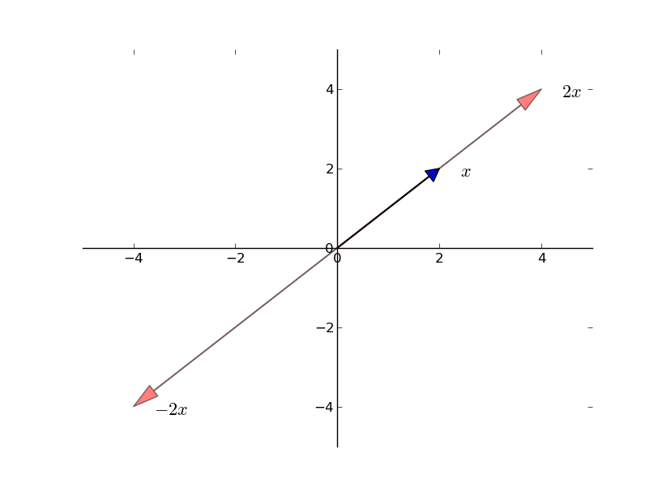
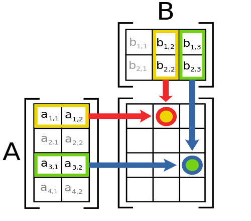

Linear Algebra
2026-04-01
Introduction
Motivation
Systems of Linear Equations
- One of the most commonly used branches of mathematics in economics
- Many applied problems require solutions to systems of linear equations
\[ \begin{split}\begin{array}{c} y_1 = a x_1 + b x_2 \\ y_2 = c x_1 + d x_2 \end{array}\end{split} \]
- Or, more generally
\[ \begin{split}\begin{array}{c} y_1 = a_{11} x_1 + a_{12} x_2 + \cdots + a_{1k} x_k \\ \vdots \\ y_n = a_{n1} x_1 + a_{n2} x_2 + \cdots + a_{nk} x_k \end{array}\end{split} \]
- Objective: solve for \(x_1,\ldots, x_k\) given \(a_{ij}\) and \(y_1,\ldots,y_n\)
Questions We’ll Answer
- Does a solution actually exist?
- Are there in fact many solutions, and if so how should we interpret them?
- If no solution exists, is there a “best” approximate solution?
- If a solution exists, how should we compute it?
This Lecture
We will show how to use Julia to solve these problems numerically.
Vectors
Definition
Vectors
- A vector of length \(n\) is just a sequence of \(n\) numbers which we write as
\[ x = \left(\begin{matrix} x_1\\\vdots\\ x_n\end{matrix}\right) \]
- The set of all \(n\)-vectors is denoted by \(\mathbb{R}^n\)
- For example, \(\mathbb{R}^2\) is the plane, and a vector in \(\mathbb{R}^2\) is just a point on the plane

Vectors in Julia
- Julia is built with vectors and matrices as fundamental building blocks
- There are multiple ways of constructing arrays:
Editing Vectors
- Once an array is created we can edit elements using
[]
Assigning to Slices
- Assigning to slices requires
.=(dot means “do for each element”)
ArgumentError: indexed assignment with a single value to possibly many locations is not supported; perhaps use broadcasting `.=` instead? Stacktrace: [1] setindex_shape_check(::Tuple{Int64, Int64}, ::Int64) @ Base ./indices.jl:276 [2] _unsafe_setindex!(::IndexLinear, A::Vector{Float64}, x::Tuple{Int64, Int64}, I::UnitRange{Int64}) @ Base ./multidimensional.jl:1017 [3] _setindex! @ ./multidimensional.jl:1008 [inlined] [4] setindex!(A::Vector{Float64}, v::Tuple{Int64, Int64}, I::UnitRange{Int64}) @ Base ./abstractarray.jl:1443 [5] top-level scope @ ~/University of Oregon Dropbox/David Evans/University of Oregon/Courses/Spring 2026/EC 410/Lectures and Website/Julia/Linear Algebra/Linear Algebra Lecture.qmd:138
Vector Operations
Vector Addition
- When we add two vectors we add them element by element
\[ \begin{split}x + y = \left[ \begin{array}{c} x_1 \\ x_2 \\ \vdots \\ x_n \end{array} \right] + \left[ \begin{array}{c} y_1 \\ y_2 \\ \vdots \\ y_n \end{array} \right] := \left[ \begin{array}{c} x_1 + y_1 \\ x_2 + y_2 \\ \vdots \\ x_n + y_n \end{array} \right]\end{split} \]
Scalar Multiplication
- Scalar multiplication takes a scalar \(\gamma\) and a vector \(x\) and produces
\[ \begin{split}\gamma x := \left[ \begin{array}{c} \gamma x_1 \\ \gamma x_2 \\ \vdots \\ \gamma x_n \end{array} \right]\end{split} \]
Scalar Multiplication

Element-wise Multiplication
- Can also multiply \(x\) and \(y\) element-wise with
.*notation
[1.0, 1.0, 1.0][2, 4, 6]3-element Vector{Float64}:
2.0
4.0
6.0The Dot Operator
In Julia, prefixing an operator with . applies it element-wise. This works with any function or operator!
Inner Products and Norms
- The inner product of two vectors \(x, y \in \mathbb{R}^n\) is defined as
\[ x' y := \sum_{i=1}^n x_i y_i \]
- Two vectors are orthogonal if their inner product is zero
- The norm of a vector \(x\) represents its “length”:
\[ \| x \| := \sqrt{x' x} := \left( \sum_{i=1}^n x_i^2 \right)^{1/2} \]
Inner Products in Julia
12.0
12.01.7320508075688772
1.7320508075688772Spanning and Linear Independence
Linear Combinations
Spanning
- Given vectors \(A = \{a_1,\ldots,a_k\}\subset \mathbb{R}^n\), what new vectors can we create using linear operations?
- \(y \in \mathbb{R}^n\) is a linear combination of \(A\) if
\[ y = \beta_1 a_1 + \beta_2 a_2 + \ldots + \beta_k a_k \text{ for some scalars $\beta_1,\ldots,\beta_k$} \]
- The set of linear combinations of \(A\) is called the span of \(A\)
Spanning

Spanning Examples
- If \(A\) contains only 1 vector \(a_1 \in \mathbb{R}^n\), its span is the line through \(a_1\) and the origin
- The canonical basis vectors \(e_1, e_2, \ldots, e_n\) in \(\mathbb{R}^n\):
\[ e_1 = \left[\begin{matrix}1\\0\\\vdots\\0\end{matrix}\right],\quad e_2 = \left[\begin{matrix}0\\1\\\vdots\\0\end{matrix}\right],\quad\ldots,\quad e_n = \left[\begin{matrix}0\\0\\\vdots\\1\end{matrix}\right] \]
- The span of \(\{e_1, e_2, \ldots, e_n\}\) is all of \(\mathbb{R}^n\) because for any \(x \in \mathbb{R}^n\):
\[ x = x_1 e_1 + x_2 e_2 + \ldots + x_n e_n \]
Spanning: A Counterexample
- Let \(A_0 = \{e_1, e_2, e_1 + e_2\} \subset \mathbb{R}^3\)
- If \(y = (y_1, y_2, y_3)\) is a linear combination of these vectors then \(y_3 = 0\)
- \(A_0\) fails to span all of \(\mathbb{R}^3\)
Key Insight
Adding more vectors doesn’t always increase the span — the new vector must point in a “genuinely new direction.”
Linear Independence
Linear Independence
- \(A = \{a_1, \ldots, a_k\} \subset \mathbb{R}^n\) is linearly dependent if a strict subset has the same span
- \(A\) is linearly independent if no such subset exists
- Since \(\mathbb{R}^n\) can be spanned by \(n\) vectors, any subset with \(m > n\) elements must be linearly dependent
- Equivalent definitions:
- No vector in \(A\) can be formed as a linear combination of the others
- If \(\beta_1 a_1 + \ldots + \beta_k a_k = 0\) then \(\beta_1 = \cdots = \beta_k = 0\)
Unique Representations
- Linearly independent vectors give unique representations in their span
- If \(A = \{a_1, \ldots, a_k\}\) is linearly independent and
\[ y = \beta_1 a_1 + \ldots + \beta_k a_k = \gamma_1 a_1 + \ldots + \gamma_k a_k \]
- Subtracting:
\[ (\beta_1 - \gamma_1) a_1 + \cdots + (\beta_k - \gamma_k) a_k = 0 \]
- By linear independence: \(\gamma_i = \beta_i\) for all \(i\)
Matrices
Definition
Matrices
- An \(n \times k\) matrix is a rectangular array with \(n\) rows and \(k\) columns
\[ \begin{split}A = \left[ \begin{array}{cccc} a_{11} & a_{12} & \cdots & a_{1k} \\ a_{21} & a_{22} & \cdots & a_{2k} \\ \vdots & \vdots & \vdots \\ a_{n1} & a_{n2} & \cdots & a_{nk} \end{array} \right]\end{split} \]
- Can also view \(A\) as a list of \(k\) column vectors in \(\mathbb{R}^n\):
\[ A = \left[\begin{matrix}a_1 & a_2 & \cdots & a_k\end{matrix}\right] \quad\text{where}\quad a_i = \left[\begin{matrix} a_{1i}\\ a_{2i} \\\vdots \\ a_{ni}\end{matrix}\right] \]
Matrix Properties
- Row vector: \(n = 1\); Column vector: \(k = 1\); Square: \(n = k\)
- The transpose \(A'\) (or \(A^T\)) is formed by swapping rows and columns (\(a_{ij} \to a_{ji}\))
\[ \begin{split}A = \left[ \begin{array}{ccc} a_{11} & a_{12} & \cdots & a_{1k} \\ \vdots & \vdots & \vdots \\ a_{n1} & a_{n2} & \cdots & a_{nk} \end{array} \right] \quad A' = \left[ \begin{array}{ccc} a_{11} & a_{21} & \cdots & a_{n1} \\ \vdots & \vdots & \vdots \\ a_{1k} & a_{2k} & \cdots & a_{nk} \end{array} \right]\end{split} \]
- If \(A\) is \(n \times k\) then \(A'\) is \(k \times n\)
Transpose in Julia
Special Matrices
Symmetric Matrices
- For square matrices, if \(A = A'\) then \(A\) is called symmetric
Diagonal Matrices
- \(A\) is diagonal if the only non-zero entries are on the principal diagonal
The Identity Matrix
- The identity matrix \(I\) has ones on the diagonal:
\[ I = \left[\begin{matrix}e_1 & e_2 & \cdots & e_n\end{matrix}\right] \]
Matrix Operations
Addition and Scalar Multiplication
- Both carry over directly from vector definitions
\[ \gamma A := \left[ \begin{array}{ccc} \gamma a_{11} & \cdots & \gamma a_{1k} \\ \vdots & \vdots & \vdots \\ \gamma a_{n1} & \cdots & \gamma a_{nk} \end{array} \right] \]
- For \(A + B\) both matrices must be \(n \times k\)
Matrix Multiplication
- The \(i, j\)-th element of \(AB\) is the inner product of row \(i\) of \(A\) and column \(j\) of \(B\)

- \(A\) must be \(n \times k\) and \(B\) must be \(k \times m\)
- In general \(AB \neq BA\)
Matrix-Vector Multiplication
- Multiplying \(n \times k\) matrix \(A\) with \(k \times 1\) vector \(x\) gives \(n \times 1\) vector:
\[ Ax = \left[ \begin{array}{c} a_{11} x_1 + \cdots + a_{1k} x_k \\ \vdots \\ a_{n1} x_1 + \cdots + a_{nk} x_k \end{array} \right] \]
Matrix-Vector Multiplication as Linear Combination
- If \(a_1, \ldots, a_k\) are the columns of \(A\):
\[ Ax = x_1 a_1 + x_2 a_2 + \ldots + x_k a_k \]
- Thus \(Ax\) is in the span of \(A\)
- Identity matrices have the property: \(IA = A = AI\)
Matrix Multiplication in Julia
Element-wise vs. Matrix Multiplication
- Element-wise multiplication via
.*
Broadcasting
Broadcasting
- Broadcasting replicates operations across dimensions using
.notation - Allows you to, for instance, add a vector to each column of a matrix
Broadcasting Rules
- Julia compares array shapes element-wise, starting from trailing dimensions
- Two dimensions are compatible when:
- They are equal, or
- One of them has length 1
Can these arrays be broadcast together?
A (4d array): 8 x 1 x 6 x 1
B (3d array): 7 x 1 x 5
Result (4d array): 8 x 7 x 6 x 5
What about these?
A (2d array): 2 x 1
B (3d array): 8 x 4 x 3
No — the second dimensions do not match.
Solving Systems of Equations
Formulation
Systems as Matrix Equations
- Our original system
\[ \begin{split}\begin{array}{c} y_1 = a_{11} x_1 + a_{12} x_2 + \cdots + a_{1k} x_k \\ \vdots \\ y_n = a_{n1} x_1 + a_{n2} x_2 + \cdots + a_{nk} x_k \end{array}\end{split} \]
- can be written as \(y = Ax\)
- Since \(Ax = x_1 a_1 + \ldots + x_k a_k\), the solution requires \(y\) to be in the span of \(A\)
- If the columns of \(A\) are linearly independent and span \(\mathbb{R}^n\), a unique solution exists
- We say \(A\) has full column rank
Regular Case
The Regular Case
- When \(A\) is \(n \times n\) with linearly independent columns:
- \(y = Ax\) has a solution for every \(y\), and this solution is unique
- Define \(g(y)\) as the solution: \(y = Ag(y)\)
- \(g(y)\) is a linear function:
\[ g(\alpha w + \beta z) = \alpha g(w) + \beta g(z) \]
- Any linear function can be represented by a matrix, so there exists \(A^{-1}\) such that \(g(y) = A^{-1}y\)
The Inverse Matrix
- If \(A\) is \(n \times n\) with full column rank, there exists \(A^{-1}\) such that
\[ I = A^{-1}A = A A^{-1} \]
- Pre-multiplying \(y = Ax\) by \(A^{-1}\):
\[ A^{-1} y = A^{-1} A x = x \]
- Determinant test: if \(\det(A) \neq 0\) then \(A\) is invertible
- If \(\det(A) = 0\) then the columns are linearly dependent and no inverse exists
Key Result
\(x = A^{-1}y\) is the solution to \(y = Ax\) when \(A\) is square and invertible.
Solving in Julia: The Inverse
Solving in Julia: The Backslash Operator
- Can also use
A\y(backslash) to solve directly
Best Practice
Prefer A\y over inv(A)*y — it is more numerically stable and efficient.
Over-determined Systems
Over-determined Systems
- When \(A\) is \(n \times k\) with \(n > k\) (more equations than unknowns)
- This case arises frequently in least-squares regression
- The span of \(A\) is unlikely to contain an arbitrary \(y \in \mathbb{R}^n\)
- Instead, find \(x\) that minimizes \(\| y - Ax \|\)
- The solution is \(\hat{x} = (A'A)^{-1}A'y\) when \(A\) has full column rank
- Julia provides the pseudo-inverse via
pinv
Least-Squares Example
Fit a line \(y = mx + c\) through noisy data:
Least-Squares Solution
Plotting the Fit
![]()
Under-determined Systems
Under-determined Systems
- If \(A\) is \(n \times k\) with \(n < k\): fewer equations than unknowns
- Expect either no solutions or infinitely many solutions
- The kernel \(\ker(A)\) is the set of all \(x\) such that \(Ax = 0\)
- If \(x\) solves \(y = Ax\) and \(\hat{x} \in \ker(A)\), then \(x + \hat{x}\) is also a solution:
\[ A(x + \hat{x}) = Ax + A\hat{x} = Ax + 0 = y \]
Caution
Under-determined systems have infinitely many solutions. Methods like pinv return the solution with smallest norm \(\|x\|\).
Eigenvalues and Eigenvectors
Definition
Eigenvectors and Eigenvalues
- For an \(n \times n\) matrix \(A\), we want to find scalar \(\lambda\) and vector \(v \in \mathbb{R}^n\) such that
\[ Av = \lambda v \]
- The operation \(Av\) returns a scalar multiple of \(v\)
Eigenvectors and Eigenvalues

Finding Eigenvalues
- Rearranging: \(0 = Av - \lambda v = (A - \lambda I)v\)
- An eigenvalue exists when the columns of \(A - \lambda I\) are linearly dependent
- We search for \(\lambda\) such that \(\det(A - \lambda I) = 0\)
- \(\det(A - \lambda I)\) is a polynomial of degree \(n\); its roots are the eigenvalues
Eigenvalue Properties
Nice facts about the eigenvalues of a square matrix \(A\):
- The determinant of \(A\) equals the product of its eigenvalues
- The trace of \(A\) (sum of diagonal elements) equals the sum of its eigenvalues
- If \(A\) is symmetric, all eigenvalues are real
- If \(A\) is invertible with eigenvalues \(\lambda_1, \ldots, \lambda_n\), then \(A^{-1}\) has eigenvalues \(1/\lambda_1, \ldots, 1/\lambda_n\)
Eigenvalues in Julia
Eigen{Float64, Float64, Matrix{Float64}, Vector{Float64}}
values:
2-element Vector{Float64}:
-1.0
3.0
vectors:
2×2 Matrix{Float64}:
-0.707107 0.707107
0.707107 0.707107Reading the Output
The columns of evecs are the eigenvectors corresponding to the eigenvalues in evals.
Application: Leontief Input-Output Model
Setup
Input-Output Analysis
- Wassily Leontief won the 1973 Nobel Prize for input-output analysis
- Key idea: industries are interdependent
- to produce steel you need coal
- to produce cars you need steel
- the coal industry needs steel for mining equipment
- Consider an economy with \(n\) industries
- Let \(a_{ij}\) = amount of good \(i\) needed to produce one unit of good \(j\)
- These form the \(n \times n\) technology matrix \(A\)
The Balance Equation
- \(x\): gross output (total production by each industry)
- \(d\): final demand (households, government, exports)
- Total output must cover intermediate demand (\(Ax\)) and final demand (\(d\)):
\[ x = Ax + d \]
- Rearranging to solve for gross output:
\[ x - Ax = d \quad \Longrightarrow \quad (I - A)x = d \quad \Longrightarrow \quad x = (I - A)^{-1} d \]
- \((I - A)^{-1}\) is the Leontief inverse
The Leontief Inverse
- Element \((i, j)\) of \((I - A)^{-1}\)
- total amount of good \(i\) needed to deliver one extra unit of good \(j\) to consumers
- Captures the cascade of indirect effects:
\[ (I - A)^{-1} = I + A + A^2 + A^3 + \cdots \]
| Term | Meaning |
|---|---|
| \(I\) | Direct output (the good itself) |
| \(A\) | First-round inputs |
| \(A^2\) | Inputs to produce the inputs |
| \(A^k\) | \(k\)-th round of indirect effects |
When Does It Exist?
\((I - A)^{-1}\) exists with non-negative entries if the spectral radius of \(A\) is less than 1
- The spectral radius is the largest absolute eigenvalue of \(A\)
Productive Economy
The spectral radius condition means each industry uses less than one unit of total inputs per unit of output. If it fails, the economy consumes more than it produces.
Three-Sector Example
Setting Up the Technology Matrix
Three sectors: Agriculture, Manufacturing, Services
3×3 Matrix{Float64}:
0.1 0.2 0.05
0.15 0.1 0.1
0.05 0.15 0.1- Column 1: producing 1 unit of agriculture needs 0.10 agriculture (seeds), 0.15 manufacturing (tractors), 0.05 services (transport)
Checking Productivity
Spectral radius: 0.3376
Economy is productive: true- Spectral radius \(< 1\) \(\Longrightarrow\) the Leontief inverse exists
Computing Gross Output
Suppose final demand is \(d = (100, 200, 150)'\):
Gross Output vs. Final Demand
Final demand: [100.0, 200.0, 150.0]
Gross output: [185.27, 277.91, 223.28]
Intermediate: [85.27, 77.91, 73.28]- Gross output exceeds final demand for every sector
- The difference \(x - d\) is intermediate demand — output used as inputs by other industries
The Multiplier Effect
What if manufacturing demand increases by 50 units?
Change in gross output: [13.7, 59.02, 10.6]- The change equals the second column of the Leontief inverse, scaled by 50
- Every sector must increase production, not just manufacturing
Multiplier Effect
A demand shock in one sector ripples through the entire economy via input-output linkages.
Summary
Key Takeaways
Concepts
- Vectors and vector spaces
- Spanning and linear independence
- Matrix operations and multiplication
- Inverse matrices and determinants
- Eigenvalues and eigenvectors
- Leontief input-output model
Julia Tools
LinearAlgebrapackagedot,norm,detinv(A),A\ypinv(A)for least-squareseigen(A)for eigenvalues.*,.+for broadcasting
EC 410 | University of Oregon